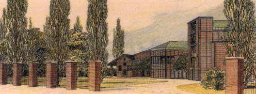

Cei Conferenza episcopale italiana
da pubblicazione allegata al n.671
di "Casabella" settembre 1999
|
Cei Conferenza episcopale italiana |
|
Progetti per la Chiesa di Santa Maria in Zivido di San Giuliano Milanese |
Marini Giulio |
 |
indice progetti

sito di propriet� della Associazione Culturale Zivido
webmaster@aczivido.net